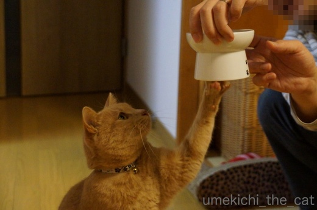
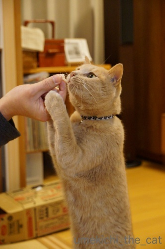
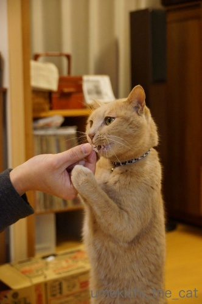
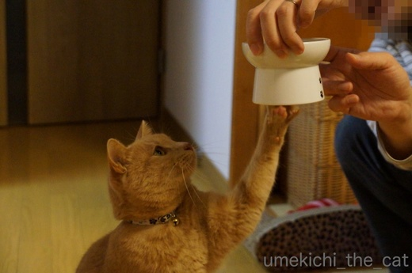
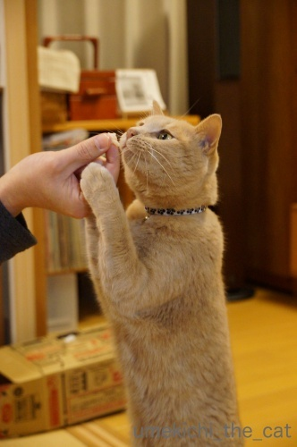
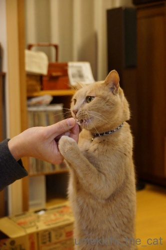

タッチ、立っち！ [梅吉]
ごはんをもらう時はかるーくうつわをタッチするのが梅吉の食事前のお約束。

はい、ここにタッチですよー。

![[猫]](https://blog.ss-blog.jp/_images_e/101.gif) たーっち☆
たーっち☆
お腹が空いている時はタッチが連打になることも。
梅吉がうつわをタッチタッチする音が高らかに鳴り響きます！
（３秒です。音付き＾＾）

こちらはタッチなんてしている場合じゃない本気の立っち。
大好きなものだとこうなっちゃいます。

おとーさん ささみやな

あむーっ！
初めは「ご飯くださいのニャーは？」と鳴かせようとしていたのですが
のどをぶるぶる鳴らすのみ。
「食べるの？」と念押しすると手が伸びてくるようになったのでお約束に。
みなさんのおうちではなにかお約束ってありますか？
 ↑ガブッと一押し↑
↑ガブッと一押し↑
そうそう！今週の土日はブログ活完全休業します。
皆様の所へは月曜以降にお伺いしますね＾＾

はい、ここにタッチですよー。

お腹が空いている時はタッチが連打になることも。
梅吉がうつわをタッチタッチする音が高らかに鳴り響きます！
（３秒です。音付き＾＾）

こちらはタッチなんてしている場合じゃない本気の立っち。
大好きなものだとこうなっちゃいます。


初めは「ご飯くださいのニャーは？」と鳴かせようとしていたのですが
のどをぶるぶる鳴らすのみ。
「食べるの？」と念押しすると手が伸びてくるようになったのでお約束に。
みなさんのおうちではなにかお約束ってありますか？
そうそう！今週の土日はブログ活完全休業します。
皆様の所へは月曜以降にお伺いしますね＾＾

カフェオレ色の梅吉

梅吉 2023年8月10日 永眠


梅吉と出会った譲渡会

犬猫の理由なき殺処分ゼロ
妄想広告
UMEKICHI 光

爆発的に早い！
時々攻撃的！
Thanks to Mr.Boss365
爆発的に早い！
時々攻撃的！
Thanks to Mr.Boss365

健気なタッチと眼差しですね〜
ずっとタッチしていて欲しいくらい、見ていたい（笑）
大好きなささみ、おとーさんの手を離しませんね。
by kiki (2018-03-02 15:02)
昔飼ってた猫さんは、なきながらぐるぐる円を描いていたような・・・
それにしても、先生はスマートですね！^^
がぶっと押しときます！！
by KENT0mg (2018-03-02 16:19)
タッチした後に見上げるお顔が～かわいい～♡
うちの約束事？え～思いつかないぞ('◇')ゞお笑いネタの”お約束”じゃないよねこの場合…
by palpal (2018-03-02 16:23)
梅吉さんのタッチ！可愛過ぎですぅ～
ちゃんと音が鳴ってますね♪
見上げる視線がたまりません(*‘∀‘)
by きぃ (2018-03-02 17:07)
わー! 可愛くって何度も見ちゃいました。ワンちゃんみたいだー。真剣に寄り目でおねだりするのもかわい! 梅吉さん用のささみなんですね。ヒクヒクするのはおかーさんがちゃんと用意してくれるからなんだ~。
by zombiekong (2018-03-02 17:17)
梅吉さんのタッチ、めちゃくちゃ可愛いですねぇ（≧∇≦）
我が家のお約束・・・う〜ん、大御所があのデカい体で
スリスリしまくって最後にぶっとい尻尾で
かみさんの場合は顔を撫でる、私の場合は顔を殴打する！くらいでしょうか(⌒-⌒; )
あっ、ちゅーるの時はニケが二足立ちして手を上下に動かします( ^ω^ )
が、これもかみさん相手の時のみです(ｰ ｰ;)
by ニッキー (2018-03-02 18:03)
うつわをタッチ！
これめちゃめちゃ可愛かった^^
動画のこの表情、とってもニマニマしちゃいますーーーっ
タッチタッチの音もいいねー♪♪
うちのお約束は、おやつの前には私の歌を聴くことかなｗ
「ピューレキッスたべるひと〜〜」って超音痴の歌を聞いてからオヤツタイム(笑)
食べるのは、ちゅ〜るだったりするのに、歌は「ピューレキッス」なのだ(笑)
by リュカ (2018-03-02 18:08)
梅吉さんタッチしていますね！
上手に立っていますね(^^)
by ma2ma2 (2018-03-02 19:34)
梅吉さん、コンコンッ!ってかわいい～(*^▽^*)
そうそう、待ちきれずに立ち上がっちゃいますよね。
ウチは儀式多いですよ～。
１．ごはん食べる人? にゃ～。の合図で別室で猫父準備開始。
２．猫母のごはんの歌を聴きながら一緒に待つ。
３．ドアが開いたら猫父を先導してごはん場所へ。
４．おすわりでカリカリ一個。
５．お手。肉球ぎにぎのあと、ようやくお皿にごはんが盛られます^^
by ゆきち (2018-03-02 20:03)
うつわにタッチ！梅吉さん、こんこんって、可愛い～～！
うちは「ご飯食べる？」って聞くと「うん！」って聞こえるような短く積極的なお返事をすることが時々ありました。普通に「にゃあ」もあったけど。
療法食をよそると、その上にもっと美味しいものをのせてくれなきゃとスリスリおねだり。
食べているときに「美味しい？」と聞くと小さい頃は「みゃうぅ（おいちー！）」みたいな高い声で、大きくなってからは低く「むみゃあ（うめえ！）」みたいな声になりました＾＾
by sana (2018-03-02 23:31)
ご飯を食べようと、お皿に向かって座る。
後ろを振り向いて、私の顔をじーっと甘えた顔で見る。
ご飯食べるの見てて！って感じかな。
背中を撫でると、食べてよし、の合図（あかりの中のルール）で
食べ始める。
食べる間、ずっと背中を撫でることに
なってる。（あかりが決めたルール）
…かな( ´∀｀ )
甘えんぼなんですよね(￣▽￣)
by マーヤ (2018-03-02 23:31)
ソックス君も私の器にそ～～っと手を伸ばしてきますね。
箸で軽く叩いて撃退してますが
めっちゃ食べたい魚は高速パンチで横取りされる時があります＾＾；
by ぽちの輔 (2018-03-03 06:37)
立っちしてタッチ？コツコツ聞こえる音がなんとも言えなく可愛いよ～♪
家はこういう事ないかも。
家は用意している手元に猫が絡んでる感じだよ～(^-^;
あと先回りｗ出される場所はわかっているのよね。
by emi (2018-03-03 15:43)
おお。立っちポーズと強烈なビーム！！
完全に立ち上がってますね。^^)
うちのは、おやつビームを発する以外はあまりないかも。
ただ、ある程度おやつを上げた後「もうないよ。」と
手をバイバイすると諦めて立ち去っていきます。^^;
by yes_hama (2018-03-03 21:29)
わぁ、こういうのうちの子らは全然です。
そういえば、ってぐらい何も教えなかった(>_<)
今からも覚えてくれるかな、どうかな…
by ryang (2018-03-04 02:24)
タッチ＆二足立ちの技！（*´∀｀*）
見上げているお目目がなんともかわゆいです。
by Ja-Kou66 (2018-03-05 00:42)
連打が最高に可愛いいいいー（≧∇≦）
動画ならではですね。
by よーちゃん (2018-03-05 07:30)
こ、これはカワイイ♡
必死のタッチ、立っち＼(^o^)／
お目目がまた、クリクリですね♪
我が家では時間が来ると、2枚のご飯皿ででコンコンと鳴らします。
これが、ご飯の合図。
一応、お約束としてるのは、ちゃんと座ってから食べてもらうこと。
立ち食いはダメだぞーーーっ、と。
でも、猛烈にお腹がすいてるときはボーっと立って、
がむしゃらに、カブリついてます(^▽^;)
by morichan (2018-03-05 12:28)
kikiさん＞
ゴハンをもらう時は真剣そのもの！
態度もコロリと変わって何日もゴハンをもらっていないかのような
悲壮感漂う鳴き方をする時もあります(^▽^;)
可愛いタッチ、私もずーっと見ていたいほどなんですが
何度もやらせると流石にお怒りモードになっちゃいますw
KENT0mgさん＞
ほう！ぐるぐるまわる_φ(･_･
梅吉は太らせないように細心の注意を払ってますから！
我が家で健康でいてもらわないと一番困るひと（じゃないけど）ですからー＾＾
palpalさん＞
可愛い顔が必要なタイミングをちゃんとわかってるのよね！
ごはんまってます♡みたいな( ´艸｀)
梅吉場合お笑い系のお約束もあるわーwww
猫トイレの掃除してくれた人を待ち伏せして脅かそうする、とか＾＾
きぃさん＞
こんこん！っていい音で鳴ってますよね＾＾
しつこくやらせようとすると、こんこん、が ばんばんみたいに
お怒りの音へ変わっていきますwww
zombiekongさん＞
手をあげるんだから お手 を教えてもよかったかな・・・
ささみは梅吉様に時々買ってます。
で、その残りを私たちがいただいていますw
ニッキーさん＞
大御所様、ニッキーさんだとついリキんじゃうのでしょうか。
でもそのおしっぽでペシ！が気持ちよさそうですよー( ´艸｀)
ニケさんの「くださいにゃ」ポーズは以前にブログにアップされていましたよね〜。
可愛いポーズはゴッドマザー様オンリーなのですね・・・
リュカさん＞
そうだったわ！リュカさんは生を見ていらっしゃるんでしたね。
今度はぜひ連打を見てくださいませ＾＾
リュカさん家はいろいろな場面で歌が登場するご様子。
うみちゃんの歌もあるし。ミュージカル一家( ´艸｀)
うちは歌じゃないけど合いの手とかお囃子みたいなのが多いですー。
とても文字では表現しきれませんっwww
ma2ma2さん＞
タッチは本当に自発的に始めたんですよー＾＾
ゴハンに立つのは夢中な証拠ですw
ゆきちさん＞
ゆきちさん家でも歌が入るのですね！
リュカさん家に続いてミュージカル一家( ´艸｀)
ちなみに我が家は合いの手かお囃子みたいなのです。伝統芸能系？
ゴハン場所へ先導するこてつくんの姿眼に浮かぶ様です。
「おとーちゃん こっちやで」みたいなＯ(≧▽≦)Ｏ
ゴハン前の肉球にぎにぎはお給仕する人の特権ですねー！
by ちぃ (2018-03-06 15:41)
sanaさん＞
「うん！」って鳴く猫はいますよねー＾＾
「むみゃあ」！」もよくわかります。
「うまうまうまうまー」って食べるのは先先代猫でした。
が、ゴハンを用意している時は「わーわー」うるさい梅吉ですが
ゴハンを目の前にすると無言。食べている間も無言です (^▽^;)
ちょっとつまらないでーすw
マーヤさん＞
食べている間ずっと背中を撫でている・・・
それはっ！！Σ(ﾟ◇ﾟ；)
マーヤさんの下僕度の高さを垣間見た様な気がいたしますwww
ぽちの輔さん＞
高速パンチ( ´艸｀)
梅吉は冷凍ご飯をラップで包んだものに高速パンチを繰り出します。
なぜにあんなに興奮するんだろう・・・・・
emiさん＞
コツコツ音が出るのは毎日ではないのですが
この時は良い音が採れましたー＾＾
梅吉もご飯を用意している間中絡んで来ます。
目の前を行ったり来たりするので手元が見えないのよねwww
ゴハンの定位置に先回りすることはなくって
最後まで手元とうつわに絡んできます。執着心がすごいよ〜。
yea_hamaさん＞
アズ氏はお手手が出てこないのですね。
ゴハンも用意が終わるまでじっと待っていてくれそう。
羨ましいです！！
梅吉はご飯を用意しているところをウロウロするので
とっても邪魔なんです。
邪魔しているだけなんだよ！と言っても聞いてくれるわけもなく (^▽^;)
ryangさん＞
梅吉の場合自発的に始めたので
褒めて伸ばしてみました＾＾
金時くんなら若いし覚えてくれるかもー！
Ja-Kou66さん＞
ゴハンをもらう時は可愛い顔になるんですよねー。
食べ終わったらもっとないのか！と睨みつけるくせに (^▽^;)
よーちゃん＞
いつもは音を消してますが
今回は音付きで楽しんでいただきましたー＾＾
morichanさん＞
お座りしてゴハン、なんてお行儀の良い！
梅吉はゴハンの用意をしようかな、と立ち上がっただけで気配を察し
用意が終わるまで「わーわーわーわー」鳴きながら
まとわりついてお手伝いしてくれます(^▽^;)
お手伝いはない方が早く用意できるよ、と言っても聞いちゃくれませんw
食べる時はいつも中腰でガツガツと一気喰いです。
by ちぃ (2018-03-06 18:04)
ごはんの時は、ちょっといやしいくらいが可愛いんですよね。
うちももっとちょうだいちょうだいしてほしい！のに、ごはん
入れると、しばらく無視されます。なにが気に入らないの？
下僕にもなにが食べたいのか、説明してほしいわ〜☆
by nachic (2018-03-07 13:23)